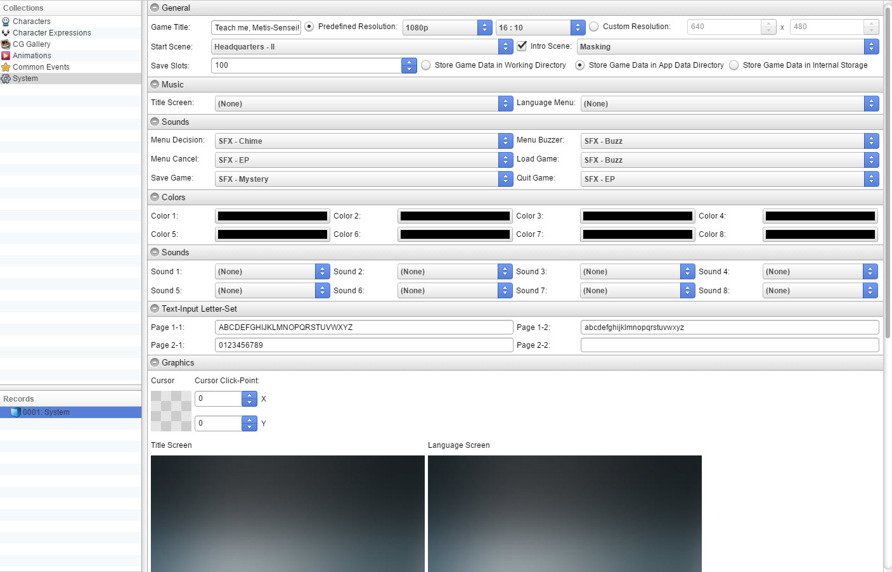
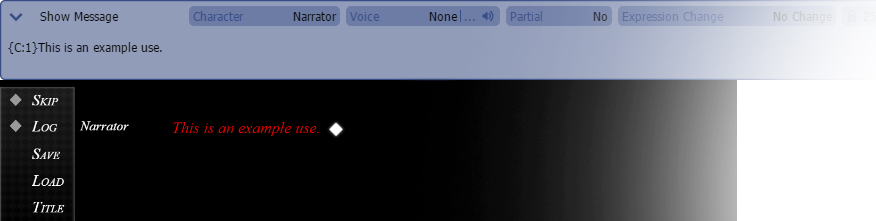
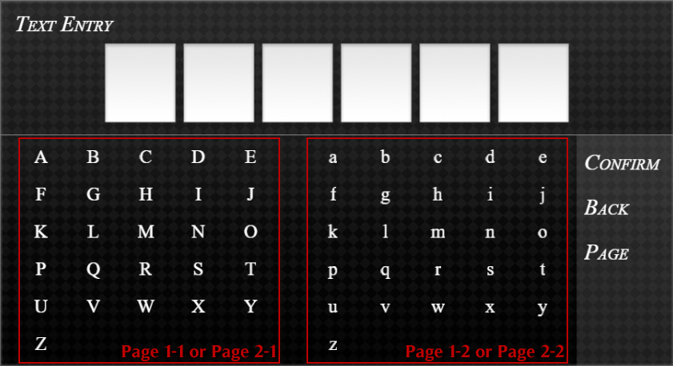

常规

游戏标题
- 游戏名称。预定义分辨率
- 根据比例和高度设置游戏分辨率。自定义分辨率
- 允许用户手动设置游戏分辨率。起始场景
- 游戏的起点。这是用户按下“新游戏”后出现的场景。片头场景
- 设置一个场景作为起点，而无需加载标题屏幕。保存槽
-将游戏存储在工作目录中
- 将所有保存文件存储在游戏的当前目录中。将游戏存储在应用程序数据目录中
- 将所有保存文件存储在操作系统依赖的应用程序数据目录中。如果游戏安装在没有写入权限的位置，这很有用。将游戏存储在内部存储中
- 将所有保存文件存储在游戏本身中。这对于 Web 和移动平台是唯一可能的选项。音乐
标题屏幕
- 设置将在标题屏幕播放的音乐。语言菜单
- 设置将在语言选择屏幕播放的音乐。声音
菜单确认
- 设置菜单确认音效。菜单蜂鸣声
- 设置无效命令的音效。菜单取消
- 设置取消或退出菜单的音效。加载游戏
- 设置加载游戏的音效。保存游戏
- 设置保存游戏的音效。退出游戏
- 设置在游戏中选择“退出”的音效。颜色
此部分用于文本颜色代码。这用于文本命令 {C:index}。
声音

此部分用于声音文本代码。这用于文本命令 {SP:index}。
预定义对象位置
请参考此
页面.文本宏
文本代码. 您可以通过三种方式使用文本宏。它们如下：文本代码
文本输入字母集
文本输入屏幕的内容。每页有两行，可以通过在文本输入中按“页面”命令进行切换。
图形

光标
- 鼠标光标的图形。鼠标点击点
- 鼠标点击与 X/Y 同步的点。标题屏幕
- 为标题屏幕设置图像。语言屏幕
- 为语言屏幕设置图像。菜单背景
- 为菜单背景设置图像。HTML